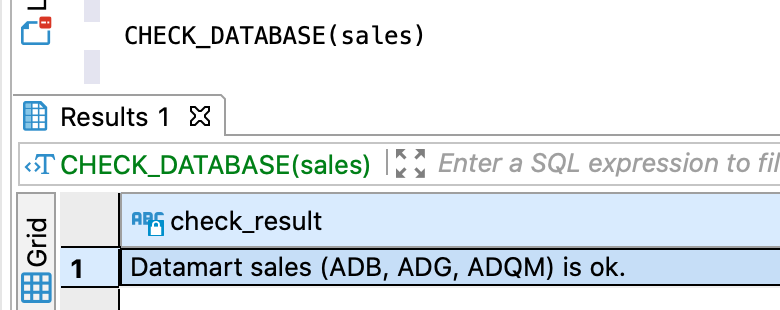
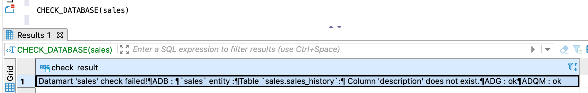

Запрос позволяет проверить соответствие логических таблиц логической базы данных и их физических представлений — физических таблиц в хранилище данных.
В проверке участвуют логические таблицы логической базы данных и все связанные с ними физические таблицы. Если СУБД хранилища не хранит данные логической таблицы, и, следовательно, не содержит связанные физические таблицы, она пропускается при проверке логической таблицы.
Проверяется соответствие следующих элементов:
Имена и порядок следования проверяются для всех столбцов логических и физических таблиц, включая
служебные столбцы, имеющиеся только у физических таблиц. Например, если служебный столбец sys_to
удален из физической таблицы, в ответе вернется сообщение о расхождении.
В ответе возвращается:
Возвращаемая информация включает сообщение об успешной проверке или найденных расхождениях, а также список проверенных СУБД хранилища.
На рисунках ниже показаны примеры ответов: на первом — ответ при отсутствии расхождений, на втором —
при наличии расхождений. Расхождения вызваны тем, что в целях иллюстрации между первым и вторым запросом
столбец description был переименован в ADB.

Ответ CHECK_DATABASE при успешной проверке

Ответ CHECK_DATABASE с найденными расхождениями
Проверка логической базы данных, выбранной по умолчанию:
CHECK_DATABASE()
Проверка указанной логической базы данных:
CHECK_DATABASE(db_name)
db_name — имя логической базы данных, для таблиц которой выполняется проверка.CHECK_DATABASE(sales)